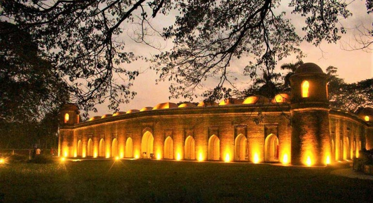

ষাট গম্বুজ মসজিদ
ষাট গম্বুজ মসজিদ বাংলাদেশের বাগেরহাট জেলার দক্ষিণ-পশ্চিমে অবস্থিত একটি প্রাচীন মসজিদ। মসজিদটির গায়ে কোনো শিলালিপি নেই। তাই এটি কে নির্মাণ করেছিলেন বা কোন সময়ে নির্মাণ করা হয়েছিল সে সম্বন্ধে সঠিক কোনো তথ্য পাওয়া যায় না। তবে মসজিদটির স্থাপত্যশৈলী দেখলে এটি যে পীর খান জাহান আলীনির্মাণ করেছিলেন সে সম্বন্ধে কোনো সন্দেহ থাকে না। ধারণা করা হয় তিনি ১৫শ শতাব্দীতে এটি নির্মাণ করেন। এ মসজিদটি বহু বছর ধরে ও বহু অর্থ খরচ করে নির্মাণ করা হয়েছিল। পাথরগুলো আনা হয়েছিল রাজমহল থেকে। এটি বাংলাদেশের তিনটি বিশ্ব ঐতিহ্যবাহী স্থানের একটির মধ্যে অবস্থিত; বাগেরহাট শহরটিকেই বিশ্ব ঐতিহ্যবাহী স্থানের মর্যাদা দেওয়া হয়েছে। ১৯৮৫ খ্রিষ্টাব্দে ইউনেস্কো এই সম্মান প্রদান করে।[১] মসজিদটি উত্তর-দক্ষিণে বাইরের দিকে প্রায় ১৬০ ফুট ও ভিতরের দিকে প্রায় ১৪৩ ফুট লম্বা এবং পূর্ব-পশ্চিমে বাইরের দিকে প্রায় ১০৪ ফুট ও ভিতরের দিকে প্রায় ৮৮ ফুট চওড়া। দেয়ালগুলো প্রায় ৮·৫ ফুট পুরু। ষাট গম্বুজ মসজিদে গম্বুজের সংখ্যা মোট ৮১ টি, সাত লাইনে ১১ টি করে ৭৭ টি এবং চার কোনায় ৪ টি মোট ৮১ টি। কালের বিবর্তনে লোকমুখে ৬০ গম্বুজ বলতে বলতে ষাট গম্বুজ নামকরণ হয়ে যায়, সেই থেকে ষাট গম্বুজ নামে পরিচিত।
অযোধ্যা মঠ/কোদলা মঠ
বাগেরহাট
বাগেরহাট শহর থেকে আনুমানিক ১০ কিলোমিটার
উত্তর পশ্চিমে পুরাতন রূপসা-বাগেরহাট সড়কের যাত্রাপুর বাজার হতে প্রায় ৩ কিলোমিটার ভেতরে।
বাগেরহাট সদর উপজেলার বারুইপাড়া ইউনিয়নের অযোধ্যা গ্রামে প্রাচীন ভৈরব নদীর পূর্ব তীরে অবস্থিত
অযোধ্যা মঠ বা কোদলা মঠ।
স্থানীয় ভাবে “অযোধ্যার মঠ” নামেই বেশি পরিচিত মঠটি। তবে “কোদলা মঠ” নামও পরিচিতি আছে। কোদলা পার্শ্ববর্তী গ্রামের নাম। বই-পুস্তক ও বিভিন্ন লেখা-লেখিতে অযোধ্যা নামটির পাসাপাসি কোদলা মঠ নমটি বেশি ব্যবহৃত হয়েছে। বর্তমানে বাংলাদেশ প্রত্নতত্ব অধিদপ্তর তাদের বিভিন্ন নির্দেশিকায় একে কোদলা মঠ নামেই লেখে।
অযোধ্যা বা কোদলা মঠের বিশেষ আকর্ষণীয় দিক হচ্ছে এর বাইরের অপূর্ব কারুকাজ সমৃদ্ধ অলঙ্করণ। বর্গাকার ভূমি পরিকল্পনায় চতুষ্কোণ বিশিষ্ট ভিতের উপর নির্মিত হয়েছে অনিন্দ্যসুন্দর এ মঠটি।
এর উচ্চতা আনুমানিক ১৮.২৯ মিটার। ইটের তৈরী মঠের প্রাচীর গুলির পুরুত্ব ৩.১৭ মিটার এবং ভেতরের বর্গাকার প্রত্যেক দেয়ালের দৈর্ঘ্য ২.৬১ মিটার। দেয়ালের পালিশ করা লাল ইটগুলি অতি উচ্চমানের।
মঠে প্রবেশর মোট ৩টি পথ। ধারণা করা হয় দক্ষিন দিকের প্রবেশ পথটি ছিল মূল ফটক। বাকি প্রবেশপথ ২টি পূর্ব ও পশ্চিম দিকে। প্রবেশ পথ গুলো মুলত ‘করবেল’ (পরপর ইট সাজিয়ে) পদ্ধতিতে তৈরি করা হয়েছে।

মঠের ভেতরের অংশে ১২/১৩ ফুট পর্যন্ত লম্বা গুম্বুজ ফাঁকা তলদেশর আকারে উপরে উঠে গিয়ে শেষ হয়েছে। অনেকে ধারণা করে এর উপরেও মঠের অভ্যন্তরে শূন্য/ফাপা আছে।
কবে কার দ্বারা এ মঠটি নির্মাণ করা হয়েছিল তা সম্পার্কে সঠিক কোন তথ্য পাওয়া যায় নি। তবে স্থাপত্যের গঠন অনুসারে ধারণা করা হয় মঠটি সম্ভবত ষোড়শ শতাব্দীর শেষ অথবা সপ্তদশ শতাব্দীর প্রথম দিকে নির্মিত। উড়িষ্যা অঞ্চলে খ্রীষ্টীয় ষোড়শ শতাব্দী পর্যন্ত যে ‘রেখা’ নমুনার মন্দির নির্মাণ পদ্ধতি দেখা যায় তার প্রভাব এ মঠে আছে বলে ধারণা করা হয়।
এটি কোন দেব-মন্দির নয়; সম্ভাবত: কোন মৃত মহাত্তার সমাধি -স্তম্ভ সরুপ মঠটি নির্মিত হয়েছিল।
মঠের দক্ষিণ দিকের কার্ণিসের নিচে দুই লাইনের ইষ্টকলিপি খুদিত ছিল। প্রথম লাইনের অক্ষর গুল পাঠোদ্ধার করার পূর্বেই প্রায় ভেঙে গেছে। লেখাটি ছিল- “……………………শর্মনা।
উদ্দিশ্য তারকং(ব্রক্ষ্ম) [প্রশা] দোহাং বিনির্মিত: ।।“ খন্ডলিপির সঠিক অর্থ নিরুপণ করা যায় নি। তবে যতদূর পাঠোদ্ধার করা যায় তা থেকে অনুমিত হয় যে, তারকের (জনৈক ব্রক্ষণ কর্তিক) প্রাসাদ বা অনুগ্রহ লাভের উদ্দেশ্যে এ মঠ খুব সম্ভবত একজন ব্রাক্ষ্মণ (শর্মনা) কর্তৃক নির্মিত হয়েছিল। মঠের নির্মান নিয়ে সবচেয়ে স্বীকৃত বারভূইয়ার অন্যতম রাজা প্রতাপাদিত্য উদ্দগে তাঁর গুরু (সভাপন্ডিত) ‘‘অবিলম্ব সরস্বতীর’’ স্মৃতিস্তম্ভ রূপে মঠটি নির্মিত হয়। এই অবিলম্ব সরস্বতী ছিলেন একজন অসাধারণ পন্ডিত। তিনি মুখে মুখে দ্রুত বড় বড় কবিতা রচনা করতে পারতেন বলে তার নাম হয় ‘অবিলম্ব সরস্বতী’। তিনি শুধু কবি নন- তিনি ছিলেন একজন পরম ভক্ত ও সাধক। অযোধ্য মঠ নামে পরিচিত মঠটি বাগেরহাটে রাজা প্রতাপাদিত্যএর অন্যতম স্মৃতি। পোড়ামাটির অলংকরণে নির্মিত মধ্যযুগীয় এ মন্দিরটি বাংলার স্থাপত্য শিল্পের এক উজ্জ্বল নিদর্শন। মঠটি তৎকালীন বাংলার সমৃদ্ধ হিন্দু ঐতিহ্যের নিদর্শণ বহন করে। রাম কৃষ্ণ মিশন মিশন বাগেরহাট
রামকৃষ্ণ মিশন হল একটি ভারতীয় ধর্মীয় সংগঠন। এই সংগঠন রামকৃষ্ণ আন্দোলন বা বেদান্ত আন্দোলন নামক বিশ্বব্যাপী আধ্যাত্মিক আন্দোলনের প্রধান প্রবক্তা।[১] এটি একটি জনকল্যাণমূলক স্বেচ্ছাসেবী সংগঠন। ১৮৯৭
সালের ১ মে রামকৃষ্ণ পরমহংসের প্রধান শিষ্য স্বামী বিবেকানন্দ রামকৃষ্ণ মিশন প্রতিষ্ঠা করেন।
মিশন স্বাস্থ্য পরিষেবা, প্রাকৃতিক দুর্যোগে ত্রাণকার্য,
গ্রামোন্নয়ন, আদিবাসী কল্যাণ, বুনিয়াদি ও উচ্চশিক্ষা এবং সংস্কৃতির প্রসারে
গুরুত্বপূর্ণ ভূমিকা গ্রহণকরেছে। এটি শতাধিক সংঘবদ্ধ সন্ন্যাসী ও সহস্রাধিক গৃহস্থ শিষ্যের একটি যৌথ উদ্যোগ। রামকৃষ্ণ মিশন কর্মযোগের ভিত্তিতে কাজকর্ম চালায়।[২]
রামকৃষ্ণ মিশনের প্রধান কার্যালয় ভারতের পশ্চিমবঙ্গ রাজ্যের রাজধানী কলকাতার নিকটবর্তী হাওড়া জেলায় বেলুর মঠে অবস্থিত। এই সংগঠন প্রাচীন হিন্দু দর্শন বেদান্তের অনুগামী। এটি সন্ন্যাসী সংগঠন রামকৃষ্ণ
মঠ কর্তৃক অনুমোদিত। রামকৃষ্ণ মঠের সদস্যরা রামকৃষ্ণ মিশনেরও সদস্য।[১]
স্থানীয় ভাবে “অযোধ্যার মঠ” নামেই বেশি পরিচিত মঠটি। তবে “কোদলা মঠ” নামও পরিচিতি আছে। কোদলা পার্শ্ববর্তী গ্রামের নাম। বই-পুস্তক ও বিভিন্ন লেখা-লেখিতে অযোধ্যা নামটির পাসাপাসি কোদলা মঠ নমটি বেশি ব্যবহৃত হয়েছে। বর্তমানে বাংলাদেশ প্রত্নতত্ব অধিদপ্তর তাদের বিভিন্ন নির্দেশিকায় একে কোদলা মঠ নামেই লেখে।
অযোধ্যা বা কোদলা মঠের বিশেষ আকর্ষণীয় দিক হচ্ছে এর বাইরের অপূর্ব কারুকাজ সমৃদ্ধ অলঙ্করণ। বর্গাকার ভূমি পরিকল্পনায় চতুষ্কোণ বিশিষ্ট ভিতের উপর নির্মিত হয়েছে অনিন্দ্যসুন্দর এ মঠটি।
এর উচ্চতা আনুমানিক ১৮.২৯ মিটার। ইটের তৈরী মঠের প্রাচীর গুলির পুরুত্ব ৩.১৭ মিটার এবং ভেতরের বর্গাকার প্রত্যেক দেয়ালের দৈর্ঘ্য ২.৬১ মিটার। দেয়ালের পালিশ করা লাল ইটগুলি অতি উচ্চমানের।
মঠে প্রবেশর মোট ৩টি পথ। ধারণা করা হয় দক্ষিন দিকের প্রবেশ পথটি ছিল মূল ফটক। বাকি প্রবেশপথ ২টি পূর্ব ও পশ্চিম দিকে। প্রবেশ পথ গুলো মুলত ‘করবেল’ (পরপর ইট সাজিয়ে) পদ্ধতিতে তৈরি করা হয়েছে।
মঠের ভেতরের অংশে ১২/১৩ ফুট পর্যন্ত লম্বা গুম্বুজ ফাঁকা তলদেশর আকারে উপরে উঠে গিয়ে শেষ হয়েছে। অনেকে ধারণা করে এর উপরেও মঠের অভ্যন্তরে শূন্য/ফাপা আছে।
কবে কার দ্বারা এ মঠটি নির্মাণ করা হয়েছিল তা সম্পার্কে সঠিক কোন তথ্য পাওয়া যায় নি। তবে স্থাপত্যের গঠন অনুসারে ধারণা করা হয় মঠটি সম্ভবত ষোড়শ শতাব্দীর শেষ অথবা সপ্তদশ শতাব্দীর প্রথম দিকে নির্মিত। উড়িষ্যা অঞ্চলে খ্রীষ্টীয় ষোড়শ শতাব্দী পর্যন্ত যে ‘রেখা’ নমুনার মন্দির নির্মাণ পদ্ধতি দেখা যায় তার প্রভাব এ মঠে আছে বলে ধারণা করা হয়।
এটি কোন দেব-মন্দির নয়; সম্ভাবত: কোন মৃত মহাত্তার সমাধি -স্তম্ভ সরুপ মঠটি নির্মিত হয়েছিল।
মঠের দক্ষিণ দিকের কার্ণিসের নিচে দুই লাইনের ইষ্টকলিপি খুদিত ছিল। প্রথম লাইনের অক্ষর গুল পাঠোদ্ধার করার পূর্বেই প্রায় ভেঙে গেছে। লেখাটি ছিল- “……………………শর্মনা।
উদ্দিশ্য তারকং(ব্রক্ষ্ম) [প্রশা] দোহাং বিনির্মিত: ।।“ খন্ডলিপির সঠিক অর্থ নিরুপণ করা যায় নি। তবে যতদূর পাঠোদ্ধার করা যায় তা থেকে অনুমিত হয় যে, তারকের (জনৈক ব্রক্ষণ কর্তিক) প্রাসাদ বা অনুগ্রহ লাভের উদ্দেশ্যে এ মঠ খুব সম্ভবত একজন ব্রাক্ষ্মণ (শর্মনা) কর্তৃক নির্মিত হয়েছিল। মঠের নির্মান নিয়ে সবচেয়ে স্বীকৃত বারভূইয়ার অন্যতম রাজা প্রতাপাদিত্য উদ্দগে তাঁর গুরু (সভাপন্ডিত) ‘‘অবিলম্ব সরস্বতীর’’ স্মৃতিস্তম্ভ রূপে মঠটি নির্মিত হয়। এই অবিলম্ব সরস্বতী ছিলেন একজন অসাধারণ পন্ডিত। তিনি মুখে মুখে দ্রুত বড় বড় কবিতা রচনা করতে পারতেন বলে তার নাম হয় ‘অবিলম্ব সরস্বতী’। তিনি শুধু কবি নন- তিনি ছিলেন একজন পরম ভক্ত ও সাধক। অযোধ্য মঠ নামে পরিচিত মঠটি বাগেরহাটে রাজা প্রতাপাদিত্যএর অন্যতম স্মৃতি। পোড়ামাটির অলংকরণে নির্মিত মধ্যযুগীয় এ মন্দিরটি বাংলার স্থাপত্য শিল্পের এক উজ্জ্বল নিদর্শন। মঠটি তৎকালীন বাংলার সমৃদ্ধ হিন্দু ঐতিহ্যের নিদর্শণ বহন করে।
রাম কৃষ্ণ মিশন মিশন বাগেরহাট
রামকৃষ্ণ মিশন হল একটি ভারতীয় ধর্মীয় সংগঠন। এই সংগঠন রামকৃষ্ণ আন্দোলন বা বেদান্ত আন্দোলন নামক বিশ্বব্যাপী আধ্যাত্মিক আন্দোলনের প্রধান প্রবক্তা।[১] এটি একটি জনকল্যাণমূলক স্বেচ্ছাসেবী সংগঠন। ১৮৯৭
সালের ১ মে রামকৃষ্ণ পরমহংসের প্রধান শিষ্য স্বামী বিবেকানন্দ রামকৃষ্ণ মিশন প্রতিষ্ঠা করেন।
মিশন স্বাস্থ্য পরিষেবা, প্রাকৃতিক দুর্যোগে ত্রাণকার্য,
গ্রামোন্নয়ন, আদিবাসী কল্যাণ, বুনিয়াদি ও উচ্চশিক্ষা এবং সংস্কৃতির প্রসারে
গুরুত্বপূর্ণ ভূমিকা গ্রহণকরেছে। এটি শতাধিক সংঘবদ্ধ সন্ন্যাসী ও সহস্রাধিক গৃহস্থ শিষ্যের একটি যৌথ উদ্যোগ। রামকৃষ্ণ মিশন কর্মযোগের ভিত্তিতে কাজকর্ম চালায়।[২]
রামকৃষ্ণ মিশনের প্রধান কার্যালয় ভারতের পশ্চিমবঙ্গ রাজ্যের রাজধানী কলকাতার নিকটবর্তী হাওড়া জেলায় বেলুর মঠে অবস্থিত। এই সংগঠন প্রাচীন হিন্দু দর্শন বেদান্তের অনুগামী। এটি সন্ন্যাসী সংগঠন রামকৃষ্ণ
মঠ কর্তৃক অনুমোদিত। রামকৃষ্ণ মঠের সদস্যরা রামকৃষ্ণ মিশনেরও সদস্য।[১]
ষাট গম্বুজ মসজিদ
খান জাহানের সমাধি
কোদলা মঠ রেজা খোদা মসজিদ
জিন্দা পীর মসজিদ
ঠান্ডা পীর মসজিদ
সিংগাইর মসজিদ
বিবি বেগনী মসজিদ
চুনাখোলা মসজিদ
নয়গম্বুজ মসজিদ
সিংগার মসজিদ
এক গম্বুজ জামে মসজিদ, বাগেরহাট
পীর আলীর সমাধি
মুনিগঞ্জ শিবমন্দির, বাগেরহাট।
শ্রী শ্রী গঞ্জেশ্বরী কালী মন্দির, বাগেরহাট।
রণবিজয়পুর মসজিদ
দশ গম্বুজ মসজিদ
কুটিবাড়ি,জমিদারবাড়ি,মোড়েলগঞ্জ।
বড় আজিনা
ছয় গুম্বজ মসজিদ, বৈটপুর
খান জাহানের নির্মিত প্রাচীন রাস্তা
বড়বাড়িয়া মুন্সীবাড়ি প্রাচীন মসজিদ,চিতলমারী,বাগেরহাট